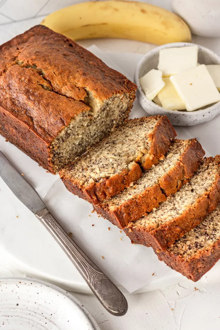

Banana Bread

Description
Banana bread is a sweet bread made using mashed bananas. It is so moist and delicious, and very easy to make. Everything can be
mixed in one bowl, and you can alter the portions of ingredients to your own liking!
You won't need a mixer or any special kitchenware to make it. All you will need is a mixing bowl, a fork, and a spoon. It is very
acessible for anyone to create, making it very popular on simplyrecipes.com!
Ingredients
- 2 to 3 medium (7" to 7-7/8" long) very ripe bananas, peeled (about 1 1/4 to 1 1/2 cups mashed)
- 1/3 cup (76g) butter, unsalted or salted, melted
- 1/2 teaspoon baking soda
- 1 pinch salt
- 3/4 cup (150g) sugar (1/2 cup if you would like it less sweet, 1 cup if more sweet)
- 1 large egg, beaten
- 1 teaspoon vanilla extract
- 1 1/2 cups (205g) all-purpose flour
Steps
- Preheat the oven to 350°F (175°C), and butter a loaf pan.
- In a mixing bowl, mash the ripe bananas with a fork until completely smooth. Stir the melted butter into the mashed bananas.
- Mix in the baking soda and salt. Stir in the sugar, beaten egg, and vanilla extract. Mix in the flour.
- Pour the batter into your prepared loaf pan. Bake for 55 to 65 minutes at 350°F.
- Remove from oven and let cool in the pan for a few minutes. Remove from pan and let it cool completely before serving.
Credits to simplyrecipes.com for the recipe.